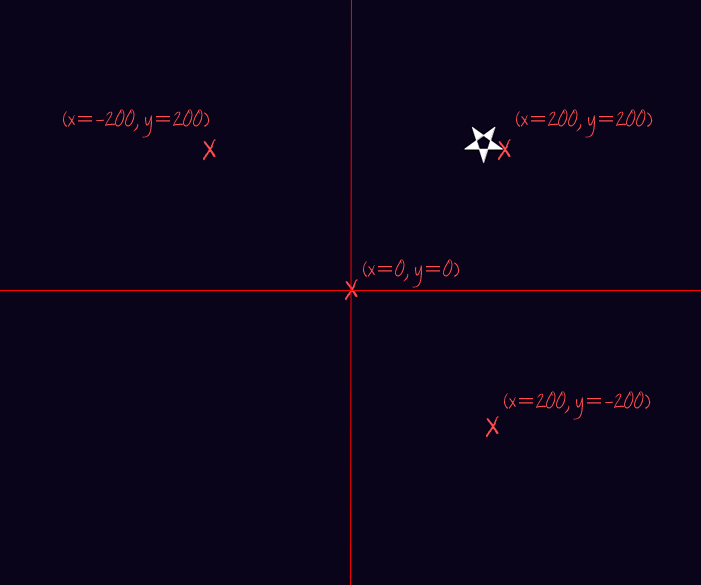

In this project, you’ll learn how functions can make writing your programs easier .
Step 1: Drawing stars
Activity Checklist
Let’s start by using what you already know about turtles to draw a star. Run this program, but make sure not to name the program turtle.py - any other name is fine!
from turtle import *
#this will draw a light grey star on a dark blue background
color("WhiteSmoke")bgcolor("MidnightBlue")pendown()begin_fill()
#draw the star shape
for side in range(5):
left(144)forward(50)end_fill()penup()forward(100)done()
screenshot
The only new commands here are begin_fill() and end_fill(). These commands are used to colour in a shape. Also notice that there is no pen line between the star and the turtle in the image above, as you have used the penup() function to stop the turtle drawing.
Also, you might have noticed the names of some new colours! You can also use hex colour codes, just like you did when making web pages.
If you wanted to draw 3 stars at different positions around the screen, then you can define your own new function called drawStar(), and then just call this new function 3 times:
from turtle import *
#a function for drawing a star#'def' means 'define'def drawStar():
pendown()begin_fill()for side inrange(5):
left(144)forward(50)end_fill()penup()
#this will draw a light grey star on a dark blue background
color("WhiteSmoke")bgcolor("MidnightBlue")
#use the function to draw stars!
drawStar()forward(100)drawStar()left(120)forward(150)drawStar()hideturtle()done()
screenshot
You’ve seen and used functions before. For example, penup() and pendown() are functions. When using these functions, you didn’t need to know exactly how they worked, you could just use them whenever you needed them.
Your new drawStar() function works in the same way. Now that you have a function for drawing a star, you don’t have to worry about exactly how to draw a star every time, you can just call the function which does all the hard work for you!
Save Your Project
Challenge: More functions
Define and use a function for drawing another shape, like a square or a triangle, or anything else you want to draw!
Save Your Project
Step 2: Passing data to functions
You now have a function for drawing stars, but what if you wanted to draw lots of stars that are different sizes? One way would be to create lots of different functions, like drawBigStar(), drawMediumStar() and drawSmallStar().
A better way is to pass data to your drawStar() function, to tell it what size star you want! You’ve already used lots of functions that receive data before, such as:
forward(100)
…which tells the forward function to move 100 pixels, and:
print("Hello")
…which tells the print function to print “Hello” to the screen.
Activity Checklist
Here’s a program with a drawStar() function that can draw stars of different sizes, using whatever number is passed to it.
from turtle import *
#a function for drawing a star of a particular sizedef drawStar(starSize):
pendown()begin_fill()for side inrange(5):
left(144)forward(starSize)end_fill()penup()
#this will draw a light grey star on a dark blue background
color("WhiteSmoke")bgcolor("MidnightBlue")
#use the function to draw stars of different sizes!
drawStar(50)forward(100)drawStar(30)left(120)forward(150)drawStar(70)hideturtle()done()
screenshot
When your program runs the line drawStar(50), the number 50 is passed to the drawStar() function, and so the value of starSize is set to 50. This means that the line forward(starSize) draws a line 50 pixels long.
screenshot
You can pass as much data to your drawStar() function as you want. For example, you could also pass the colour of the star you want to draw:
from turtle import *
#a function for drawing a star of a particular sizedef drawStar(starSize, starColour):
color(starColour)pendown()begin_fill()for side inrange(5):
left(144)forward(starSize)end_fill()penup()
#this will draw a dark blue background
bgcolor("MidnightBlue")
#use the function to draw stars of different sizes!
drawStar(50, "Red")forward(100)drawStar(30, "White")left(120)forward(150)drawStar(70, "Green")hideturtle()done()
screenshot
Calling the function drawStar(50, "red") works in the same way as before, except now the first piece of data (50) becomes the value of starSize, and the second piece of data ("Red") becomes the value of starColour.
Save Your Project
Challenge: Drawing planets
Create a function for drawing a planet called drawPlanet(). Pass data to the function, so that you can specify the size and colour of the planet you want to draw.
Save Your Project
Step 3: Random stars
Let’s use the drawStar() function to draw different sized stars randomly around the screen.
Activity Checklist
Run this program, which moves the turtle to a new position, and then draws a white star:
from turtle import *
#a function for drawing a star of a particular sizedef drawStar(starSize, starColour):
color(starColour)pendown()begin_fill()for side inrange(5):
left(144)forward(starSize)end_fill()penup()
#this will draw a dark blue background
bgcolor("MidnightBlue")
#move to a different location(x=200,y=200)penup()setpos(200 , 200)pendown()
#use the function to draw a large red star
drawStar(50, "White")hideturtle()done()
The setpos() function moves the turtle to whatever x and y coordinates are passed to it. In the program above, the code setpos(200 , 200) moves the turtle to the point x=200, y=200 on the screen. What would happen if you changed the numbers passed to the setpos() function?
screenshot
You’ll be using code to move to a random location a lot, so let’s define another function called moveToRandomLocation(), which, well, moves the turtle to a random location (obviously)!
from turtle import *
from random import *
#a function for moving the turtle to a random locationdef moveToRandomLocation():
penup()setpos( randint(-400,400) , randint(-400,400) )
pendown()
#a function for drawing a star of a particular size
def drawStar(starSize, starColour):
color(starColour)pendown()begin_fill()for side inrange(5):
left(144)forward(starSize)end_fill()penup()
#this will draw a dark blue background
bgcolor("MidnightBlue")
#draw 30 stars(random sizes/locations)for star inrange(30):
moveToRandomLocation()drawStar( randint(5,25) , "White")
hideturtle()done()
screenshot
As you can see, this program draws 30 stars, each time moving to a random location and then drawing a star with a random size between 5 and 25 pixels. Remember that the code randint(5,25) chooses a random number between 5 and 25.
Save Your Project
Step 4: Functions within functions
You can write functions that make use of other functions, to make writing large programs even easier!
Activity Checklist
It would be great if we could add a galaxy of small multi-coloured stars to our drawing. As we already have a function to draw stars, we can create another function called drawGalaxy() that makes use of the drawStar() function that we already have:
from turtle import *
from random import *
#a function for moving the turtle to a random locationdef moveToRandomLocation():
penup()setpos( randint(-400,400) , randint(-400,400) )
pendown()
#a function for drawing a star of a particular size
def drawStar(starSize, starColour):
color(starColour)pendown()begin_fill()for side inrange(5):
left(144)forward(starSize)end_fill()penup()
#a function for drawing a small galaxy of stars
def drawGalaxy(numberOfStars):
starColours = ["#058396","#0275A6","#827E01"]
moveToRandomLocation()
#draw lots of small coloured starsfor star inrange(numberOfStars):
penup()left( randint(-180,180) )
forward( randint(5,20) )
pendown()
#draw a small star in a random colour
drawStar( 2, choice(starColours) )
speed(11)
#this will draw a dark blue background
bgcolor("MidnightBlue")
#draw 30 white stars(random sizes/locations)for star inrange(30):
moveToRandomLocation()drawStar( randint(5,25) , "White")
#draw 3 small galaxies of 40 stars
for galaxy inrange(3):
drawGalaxy(40)hideturtle()done()
screenshot
Calling drawGalaxy(40) 3 times means that 3 new galaxies are drawn, each containing 40 stars. For each galaxy, the drawStar() function is run 40 times, each time moving a small random amount before drawing a really small random colour star.
The code speed(11) has also been added to speed up the turtle!
You can also draw constellations made up of stars, joined together with white lines. Again, this is really easy to do, because you already have the function to draw stars!
from turtle import *
from random import *
#a function for moving the turtle to a random locationdef moveToRandomLocation():
penup()setpos( randint(-400,400) , randint(-400,400) )
pendown()
#a function for drawing a star of a particular size
def drawStar(starSize, starColour):
color(starColour)pendown()begin_fill()for side inrange(5):
left(144)forward(starSize)end_fill()penup()
#a function for drawing a small galaxy of stars
def drawGalaxy(numberOfStars):
starColours = ["#058396","#0275A6","#827E01"]
moveToRandomLocation()
#draw lots of small coloured starsfor star inrange(numberOfStars):
penup()left( randint(-180,180) )
forward( randint(5,20) )
pendown()
#draw a small star in a random colour
drawStar( 2, choice(starColours) )
#a function for drawing a joined constellation of stars
def drawConstellation(numberOfStars):
moveToRandomLocation()
#first draw all stars except the last one,
#joined by lines, like this: *--*--*--
for star inrange(numberOfStars-1):
drawStar( randint(7,15) , "white")
pendown()left( randint(-90,90) )
forward( randint(30,70) )
#now draw the last star
drawStar( randint(7,15) , "White")
speed(11)
#this will draw a dark blue background
bgcolor("MidnightBlue")
#draw 30 white stars(random sizes/locations)for star inrange(30):
moveToRandomLocation()drawStar( randint(5,25) , "White")
#draw 3 small galaxies of 40 stars
for galaxy inrange(3):
drawGalaxy(40)
#draw 2 constellations, each with a random number of stars
for constellation inrange(2):
drawConstellation(randint(4,7))
hideturtle()done()
screenshot
Save Your Project
Challenge: Functions everywhere!
Program the turtle to draw your own picture. Try to use functions wherever possible, to draw any shapes that you’ll use a lot.
For example, you could draw a house, using drawSquare() and drawTriangle() functions.
You could even pass data to your functions, to allow you to draw shapes in different sizes and colours! Here are some examples:
Save Your Project
Hi there!
Seems like this is your first time here. Would you like a tour?